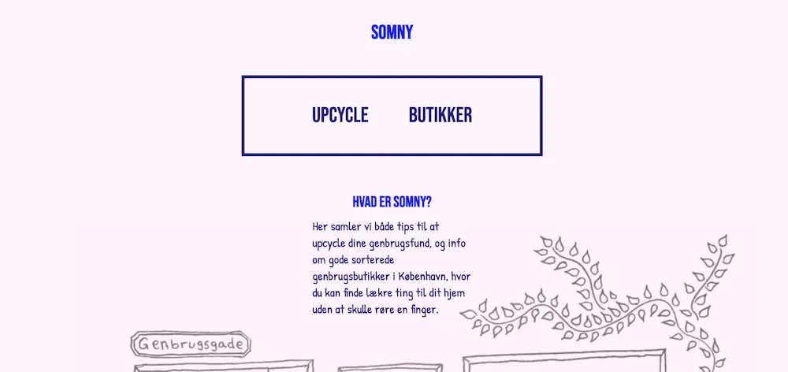
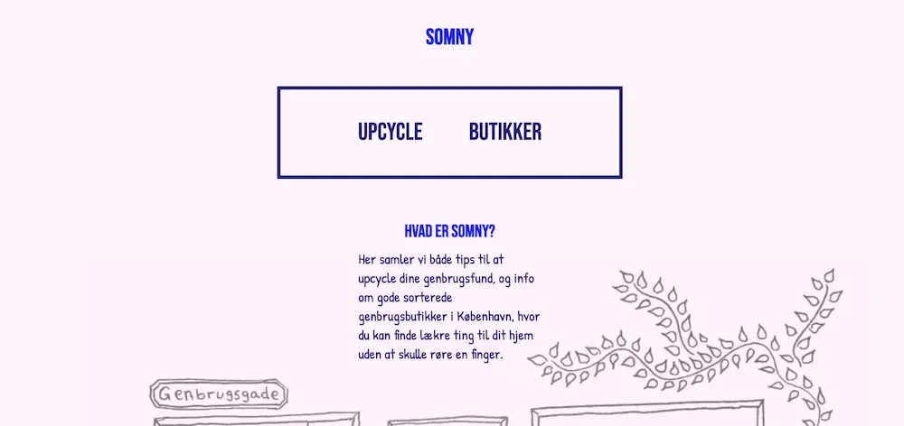

UX & UI
Temaet
I temaet UX og UI lærte vi om UX-metoder og hvordan man præsenterer sit produkt samt research og testresultater. Derudover lærte vi om samspillet mellem tests, research og designprincipper så man tager designmæssige valg ud fra dette, og ikke ud fra ens personlige præferencer og antagelser.
Vi skulle til baggrund for vores præsentation/ pitch, kode og designe en hjemmeside ud fra et selvvalgt emne, og om noget vi synes der manglede mere af.
Min løsning
Jeg valgte at skabe en hjemmeside med fokus på genbrugsmøbler. Både hvor man kan finde gode genbrugsbutikker i København, men også hvordan man kan upcycle dem. Min hjemmeside kaldte jeg somny.dk, og dens målgruppe var primært unge i København, med interesse for kreative projekter og genbrug, eller med lyst til at blive det.
Min pitch
I min præsentation fokuserede jeg på hvordan jeg havde designet sitet, og valgt indhold til det ud fra mit foregående interview af en ung kvinde der passer målgruppen, og tests af mine medstuderende. Det var f.eks. igennem mit interview jeg blev bekræftet i, at inkorporerer en upcyclings guide, da det var selve den proces der kunne afholde hende fra at købe genbrug.
Test af prototype
Under både 5-sekunds-test, og tænkehøjttest, blev det tydeligt at flere af mine medstuderende overså boksen med links på forsiden af sitet, og valgte at bruge top-menuen til at navigerer. Derfor fjernede jeg topmenuen på forsiden, sådan at det umiddelbare indtryk man fik af hjemmesiden, var mere overskueligt og tydeligt.
Ud fra denne proces lærte jeg hvor vigtigt det kan være at lave tests og interviews, så man kan optimere sit produkt til modtageren.
 
